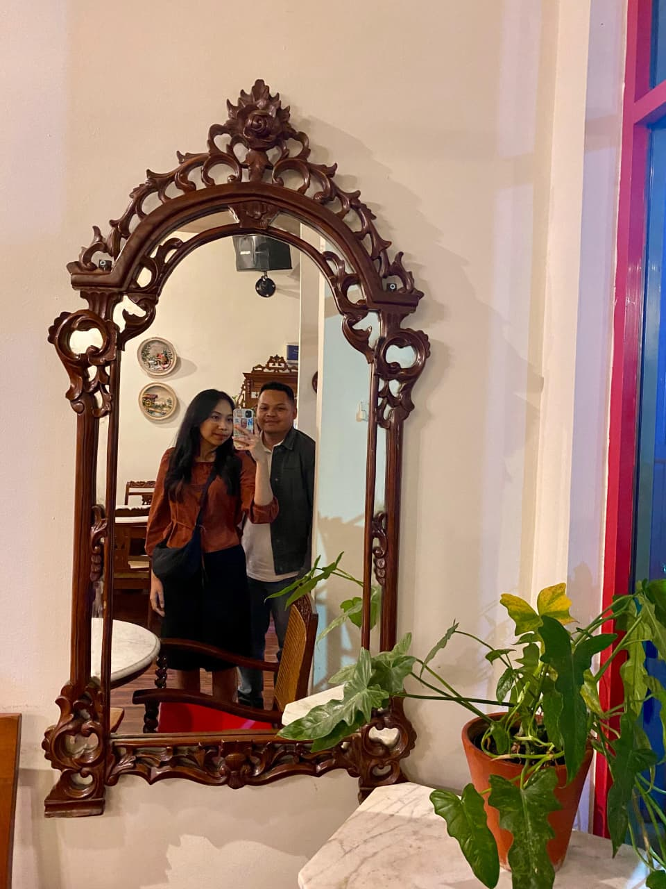
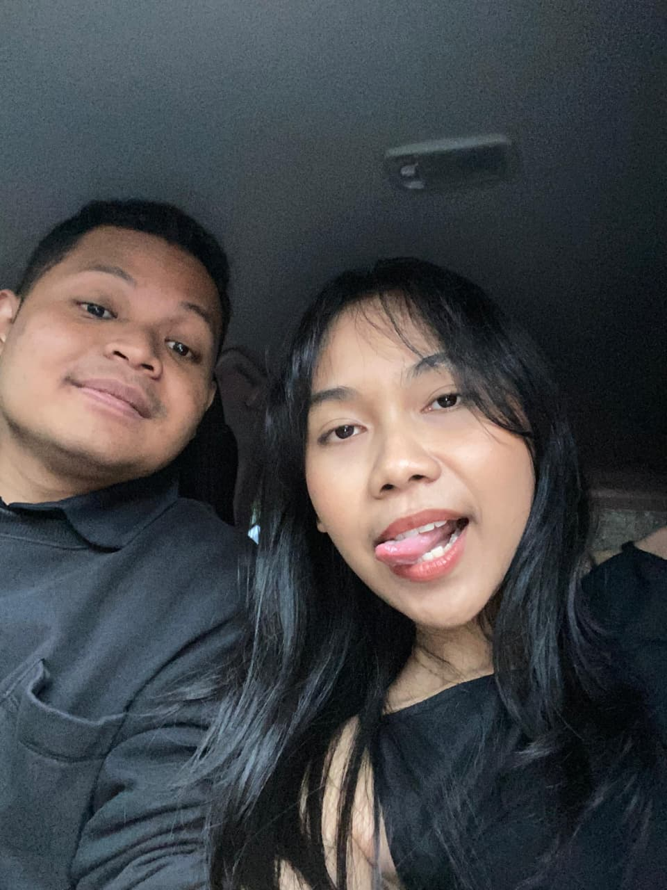
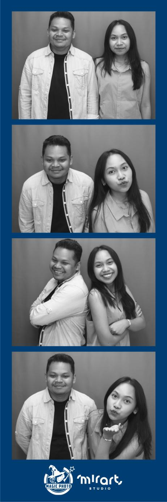

Us, in Time.
Setiap detik yang berlalu adalah cerita milik kita.
Lagu Favorit Kita
Melodi yang selalu mengingatkanku padamu
Lil Thing
Maliq & D'Essentials
Here, There and Everywheres
The Beatles
Ketika Kau Menyapa
Soulful Corp
Jejak Kisah Kita
Dari "hai" yang sederhana, hingga "jangan pergi" yang penuh makna. Ini adalah garis waktu favoritku.
Pertemuan Pertama
Berawal sapaan dikelas yang singkat yang canggung. Siapa sangka, hari itu adalah awal dari skenario terindah yang disiapkan semesta untukku.
Notifikasi Pertama
Aneh rasanya chat pertama kita merupakan ucapan selamat tahun baru. Tapi siapa sangka itu awal dari chat-chat berikutnya.
Kita Dimulai
Hari yang aneh, justru pertemuan pertama kita diluar kampus aku dalam pengaruh paracetamol dan pura-pura tanya tesis biar bisa ketemu.
Cina dan Oleh-oleh
Hari itu, tiada ku sangka oleh-olehku dibuatkan video. walaupun tatapan ku lari dari tatapan mu. bagi ku, kamu sangat menarik dan sulit itu buat aku grogi.
Bali dan ulang taun
Aneh rasanya dirayakan dan diberi kado oleh kamu yang tiba-tiba masuk kehidupku. aku tersipu malu dan bahagia. momen itu membulatkan tekat ku untuk mendekatimu
Bukan aku dan kamu
hari itu bukan lagi kamu dan aku, tapi kita. sebuah pertanyaan yang aku lembar dengar gemetar "glo what do you think kali kita pacaran?" Bodoh rasanya karena tanpa persiapan dan aku mrasa terlalu nekat hari itu.
Momen kita berdua



Setiap kenangan kita
tersimpan di sini,
selamanya
Terima kasih sudah menjadi bagian dari hidupku. Setiap detik bersamamu adalah hadiah yang tak ternilai.